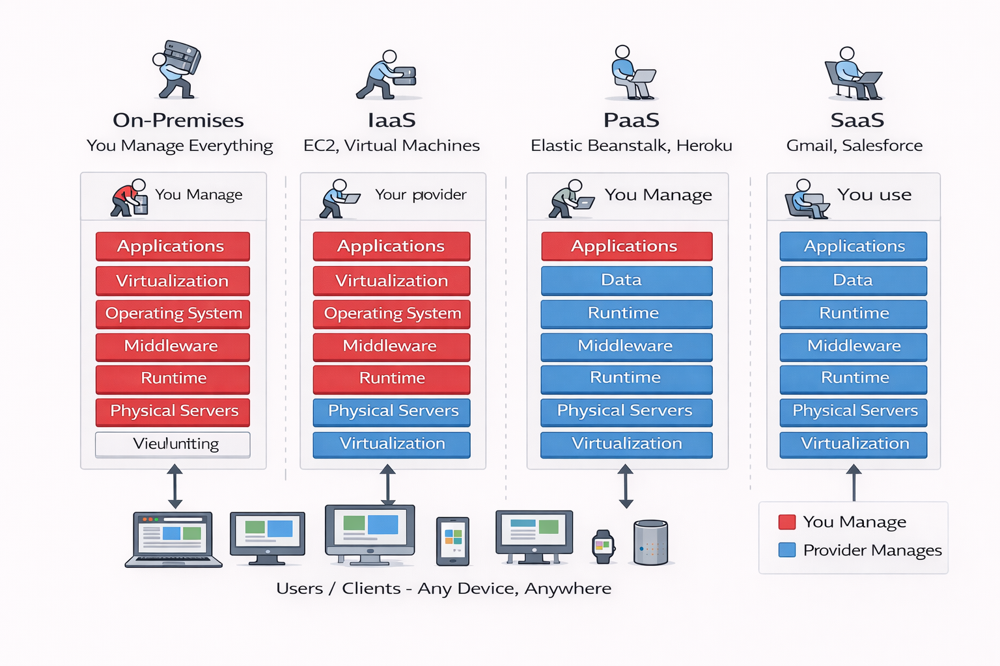

Now that we understand why cloud makes sense economically, let's explore what cloud actually is
and who provides it.
What is a Cloud Computing Service Provider?
A Cloud Computing Service Provider (CCSP) is a company that
delivers on-demand computing resources—including servers, storage, databases, networking,
and software—over the internet on a pay-per-use or subscription basis.
🏨 Hotel Analogy - Perfect for Understanding Cloud:
Owning Data Center = Buying a House
- Huge upfront cost
- You maintain everything (plumbing, electrical, repairs)
- Stuck with it even when traveling
- Empty rooms waste money
Using Cloud = Staying in Hotels
- No upfront cost
- Hotel maintains everything
- Book only when needed
- Book small room when alone, suite when family visits
- Switch hotels if better option appears
- Pay only for nights you stay
The Big Three Cloud Providers
Amazon Web Services (AWS)
Market Leader: ~32% global market share, largest and most mature cloud provider.
Founded: 2006 (first major public
cloud)
Parent Company: Amazon (started as internal infrastructure for Amazon.com, then
opened to public)
Global Reach:
- 33 geographic regions
- 105 availability zones
- Presence in over 245 countries and territories
Services: 200+ services covering every possible need:
- Compute: EC2 (virtual servers), Lambda (serverless), ECS (containers)
- Storage: S3 (object storage), EBS (block storage), EFS (file storage)
- Database: RDS (relational), DynamoDB (NoSQL), Aurora (high-performance)
- Networking: VPC (virtual networks), Route 53 (DNS), CloudFront (CDN)
- AI/ML: SageMaker, Rekognition (image analysis), Polly (text-to-speech)
- Security: IAM (access control), WAF (firewall), GuardDuty (threat
detection)
Strengths:
- Largest service portfolio
- Most mature ecosystem
- Best documentation and community support
- Dominant in startups and tech companies
Who uses AWS: Netflix, Airbnb, NASA, Spotify, Slack, Adobe, Samsung
Microsoft Azure
Market Position: ~23% global market share, second largest
Founded: 2010
Global Reach: 60+ regions worldwide
Key Strength: Azure offers seamless
integration with Microsoft products like Windows Server, Active Directory, Office 365, and
SQL Server, making it ideal for enterprises heavily invested in Microsoft ecosystem.
Popular Services:
- Azure Virtual Machines (compute)
- Azure SQL Database
- Azure Active Directory (enterprise identity)
- Azure DevOps (CI/CD pipelines)
Who uses Azure: 95% of Fortune 500 companies, BMW, GE Healthcare, Walmart
Google Cloud Platform (GCP)
Market Position: ~11% global market share, third largest
Founded: 2008
Global Reach: 40+ regions
Key Strengths:
- Advanced data analytics (BigQuery)
- Machine learning (TensorFlow, Vertex AI)
- Kubernetes expertise (Google invented Kubernetes)
- Global network infrastructure (Google's backbone)
Popular Services:
- Compute Engine (virtual machines)
- BigQuery (massive-scale analytics)
- Cloud Storage
- Google Kubernetes Engine (GKE)
Who uses GCP: Spotify, Twitter, Snap, Target, PayPal
| Provider |
Best For |
Strength |
Market Share |
| AWS |
Startups, general purpose, broadest services |
Largest ecosystem |
~32% |
| Azure |
Microsoft-centric enterprises |
Enterprise integration |
~23% |
| GCP |
Data analytics, ML, containers |
Advanced analytics |
~11% |

Figure 10: Cloud Market Share - The big three dominate global
cloud infrastructure
Cloud Service Models
Cloud providers offer different levels of control and management responsibility:
Infrastructure as a Service (IaaS)
IaaS provides virtualized computing resources over the
internet, where the provider manages physical hardware and virtualization while customers
manage operating systems, middleware, and applications.
Provider manages: Physical servers, storage, networking, virtualization
You manage: Operating system, security patches, applications, data
Analogy: Renting an unfurnished apartment. You get the space, electricity,
water—but you bring your own furniture, decorations, and organize everything.
Examples: AWS EC2, Azure Virtual Machines, Google Compute Engine
Use when: You need full control, custom configurations, running legacy
applications
Platform as a Service (PaaS)
PaaS provides a development and deployment platform where
the provider manages infrastructure and runtime environments while customers focus on
application code and data.
Provider manages: Infrastructure, operating systems, runtime (Node.js, Python,
Java)
You manage: Your application code, data
Analogy: Renting a furnished apartment. Furniture, appliances all provided—you
just bring your personal belongings and live there.
Examples: AWS Elastic Beanstalk, Azure App Service, Google App Engine, Heroku
Use when: You want to focus on coding, not infrastructure management
Software as a Service (SaaS)
SaaS delivers fully functional applications over the
internet where the provider manages everything and users simply access the application
through a web browser or app.
Provider manages: Everything—infrastructure, platform, application
You manage: Your data, user access, configuration settings
Analogy: Staying in a hotel with room service. Everything is ready, you just use
it.
Examples: Gmail, Office 365, Salesforce, Dropbox, Zoom, Slack
Use when: You just need to use software, not manage it
| Model |
You Control |
Provider Controls |
Example |
| IaaS |
OS, Apps, Data |
Hardware, Networking |
EC2 instance |
| PaaS |
Apps, Data |
Hardware, OS, Runtime |
Elastic Beanstalk |
| SaaS |
Configuration, Data |
Everything else |
Gmail, Salesforce |

Figure 11: Service Models - Who manages what in IaaS vs PaaS vs
SaaS
Cloud Deployment Models
Public Cloud
Infrastructure shared across multiple organizations, owned and operated by the cloud provider.
How it works: AWS, Azure, GCP own massive data centers. Thousands of companies
share the same physical infrastructure (but isolated virtually).
Advantages:
- Lowest cost (economies of scale)
- No maintenance burden
- Infinite scalability
- Access latest technology
Considerations:
- Data stored off-premises
- Internet dependency
- Shared infrastructure (though isolated)
Best for: Most businesses, startups, web applications
Private Cloud
Dedicated infrastructure for a single organization, either on-premises or hosted.
How it works: Company builds its own cloud-like environment using tools like
VMware or OpenStack, or pays for dedicated infrastructure from a provider.
Advantages:
- Maximum control
- Enhanced security and privacy
- Regulatory compliance easier
- Predictable performance (no noisy neighbors)
Considerations:
- Higher costs (no economies of scale)
- You manage infrastructure
- Limited scalability
Best for: Government, healthcare, financial institutions with strict regulations
Hybrid Cloud
Hybrid cloud combines public and private clouds with
orchestration between them, allowing workloads to move between environments based on
requirements.
How it works: Keep sensitive data in private cloud, run public-facing apps in
public cloud, burst to public cloud during traffic spikes.
Common scenarios:
- Patient records in private cloud (HIPAA compliance), appointment booking in public cloud
- Financial transactions in private cloud, marketing website in public cloud
- Normal workload in private cloud, Black Friday surge handled by public cloud
Best for: Enterprises with existing data centers gradually migrating to cloud

Figure 12: Deployment Models - Public, Private, and Hybrid cloud
architectures
Key Cloud Characteristics (The Five Essentials)
According to NIST (National Institute of Standards and Technology), cloud computing has five
essential characteristics:
1. On-Demand Self-Service
Users can provision computing resources automatically
without requiring human interaction with the service provider.
Example: Launch an EC2 instance in 2 minutes through AWS Console or CLI—no phone
calls, no waiting for IT approval.
2. Broad Network Access
Resources available over the network, accessible from any device (laptop, phone, tablet).
Example: Access your AWS infrastructure from office, home, coffee shop, anywhere
with internet.
3. Resource Pooling
Provider's resources are pooled to serve multiple customers using multi-tenant model.
Example: AWS doesn't dedicate a physical server to you alone. Many customers'
virtual machines run on the same hardware (but isolated).
4. Rapid Elasticity
Resources can be elastically provisioned and released to
scale rapidly outward and inward based on demand, appearing unlimited to users.
Example: Auto Scaling automatically adds servers during traffic spike, removes
them when traffic drops—all within minutes.
5. Measured Service
Cloud systems automatically control and optimize resource use through metering capabilities.
Example: AWS tracks every second of EC2 usage, every GB stored in S3, every API
call made—you pay for exactly what you use.
Benefits of Cloud Computing
For Businesses
| Benefit |
Traditional |
Cloud |
| Time to Deploy |
Weeks to months |
Minutes to hours |
| Upfront Cost |
$100K - $1M+ |
$0 (pay as you go) |
| Geographic Expansion |
Build data centers ($Ms, years) |
Click to deploy in new region |
| Disaster Recovery |
Duplicate infrastructure (2x cost) |
Replicate to another region (small cost) |
| Technology Updates |
Buy new hardware every 3 years |
Always access latest |
| Focus |
50% on IT management |
100% on business |
For Developers and IT Teams
- Experimentation: Try new technologies without buying hardware (spin up GPU
instances for ML testing)
- Automation: Infrastructure as Code (define entire infrastructure in
templates)
- Global Deployment: Deploy app in Tokyo, London, New York simultaneously
- Monitoring: Built-in dashboards, alerts, logs
- Security: Provider handles physical security, DDoS protection, compliance
certifications
✅ Real Success Story: Netflix
Netflix migrated entirely from their own data centers to AWS. Results:
- Serves 200+ million subscribers globally
- Handles billions of hours of streaming
- Can release new features daily
- Survived their data center fire (2008) without downtime—that's when they decided to go
all-in on cloud
- Estimated: AWS enables Netflix to operate at 1/10th the cost of building their own
global data center network
When Cloud Makes Sense vs When It Might Not
Cloud is Perfect For:
- ✅ Startups and new projects (no upfront investment)
- ✅ Variable or unpredictable workloads (elastic scaling)
- ✅ Global applications (deploy worldwide easily)
- ✅ Development and testing (spin up/down environments)
- ✅ Disaster recovery (cost-effective redundancy)
- ✅ Big data and analytics (access to powerful compute on-demand)
Cloud May Be Challenging For:
- ⚠️ Extremely consistent workloads running 24/7 for years (CapEx might be cheaper after 3-5
years)
- ⚠️ Highly regulated industries with strict data locality requirements (though improving)
- ⚠️ Applications requiring specific hardware not available in cloud
- ⚠️ Organizations with existing massive data center investments (hybrid approach better)
⚡ Modern Trend: Even companies with concerns about cloud are adopting hybrid
approaches. Keep the most sensitive systems on-premises, move everything else to cloud. Best
of both worlds.